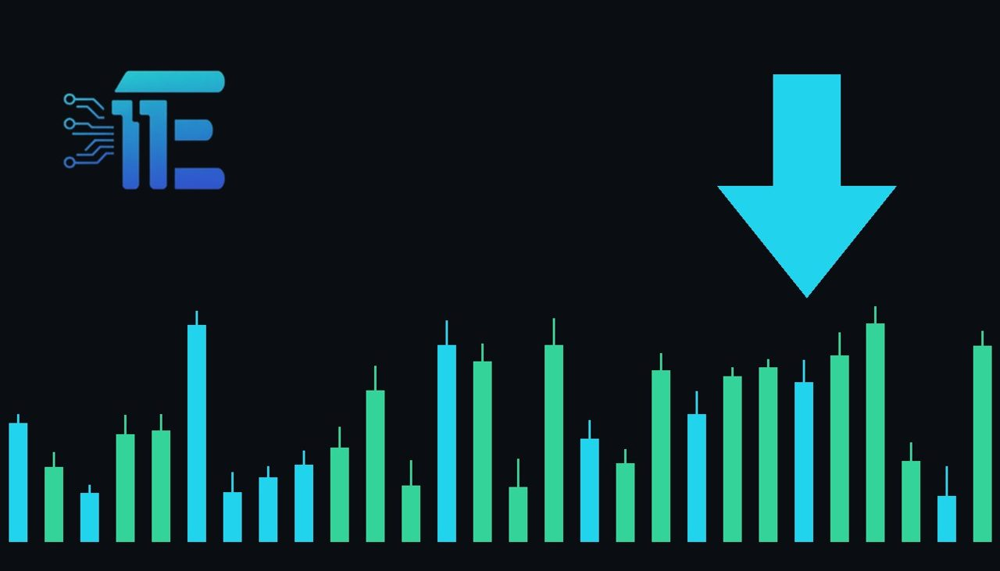

TSX Slips as Gold Miners Fall on US Inflation Dataទីផ្សារ TSX ខណៈភាគហ៊ុនរ៉ែស្រុតចុះក្រោមឥទ្ធិពលទិន្នន័យអតិផរណាអាមេរិក
XAU/USD impact: ▼ Bearishផលប៉ះពាល់លើ XAU/USD: ▼ ធ្លាក់

Canada's main stock index dropped as falling gold prices and mining earnings weighed on materials shares amid US inflation data. The assessment of broader US economic data and inflation directly shifts market sentiment for XAU/USD.
សន្ទស្សន៍ភាគហ៊ុនកាណាដាបានធ្លាក់ចុះដោយសារតម្លៃមាសស្រុតចុះនិងប្រាក់ចំណូលរ៉ែខកចិត្ត εν وسط ទិន្នន័យអតិផរណាអាមេរិក។ ការវាយតម្លៃលើទិន្នន័យសេដ្ឋកិច្ចនិងអតិផរណានេះជះឥទ្ធិពលផ្ទាល់ដល់ទីផ្សារ XAU/USD ។
Canada's main stock index edged lower as falling gold prices and disappointing mining earnings weighed heavily on materials shares. Market participants assessed fresh US inflation data and stronger-than-expected economic growth figures during the session.
ខណៈដែលតម្លៃមាសស្រុតចុះ និងប្រាក់ចំណូលពីការធ្វើរ៉ែដែលមិនសូវល្អបានទាញទម្លាក់ភាគហ៊ុនវិស័យសម្ភារៈ។ អ្នកចូលរួមទីផ្សារបានធ្វើការវាយតម្លៃលើទិន្នន័យអតិផរណារបស់អាមេរិក និងតួលេខកំណើនសេដ្ឋកិច្ចដែលប្រសើរជាងការរំពឹងទុកក្នុងអំឡុងពេលនោះ។
This economic release transmits directly to XAU/USD through shifting rate expectations and fluctuations in the US dollar. Stronger economic growth and sticky inflation figures typically pressure non-yielding gold by keeping borrowing costs elevated and strengthening the greenback.
ទិន្នន័យសេដ្ឋកិច្ចនេះត្រូវបានបញ្ជូនដោយផ្ទាល់ទៅកាន់ XAU/USD តាមរយៈការផ្លាស់ប្តូរការរំពឹងទុកអត្រាការប្រាក់ និងការប្រែប្រួលនៃដុល្លារអាមេរិក។ កំណើនសេដ្ឋកិច្ចកាន់តែរឹងមាំ ដោយសារការរក្សាថ្លៃដើមខ្ពស់និងការពង្រឹងតម្លៃរូបិយប័ណ្ណដុល្លារ។
A balanced view shows that if inflation indicators continue to run hot, traders will likely price in tighter monetary policy, which generally drives down precious metal values. Conversely, any sudden cooling in economic momentum or unexpected consumer price moderation would typically provide safe-haven and inflation-hedge support for gold.
ទស្សនៈប្រុងប្រយ័ត្នបង្ហាញថា ប្រសិនបើសន្ទស្សន៍អតិផរណាបន្តកើនឡើង អ្នកជួញដូរទំនងជានឹងកំណត់តម្លៃគោលនយោបាយរូបិយវត្ថុឱ្យរឹតបន្តឹង ដែលជាទូទៅជំរុញតម្លៃលោហៈមានតម្លៃឱ្យធ្លាក់ចុះ។ ផ្ទុយទៅវិញ ការធ្លាក់ចុះណាមួយនៃសន្ទុះសេដ្ឋកិច្ច ឬការទប់ស្កាត់អតិផរណាមិនបានរំពឹងទុក ជាធម្មតានឹងផ្តល់ការគាំទ្រដល់មាសក្នុងនាមជាទ្រព្យសុវត្ថិភាពនិងការការពារអតិផរណា។
Traders should monitor incoming US macroeconomic releases, subsequent central bank commentary regarding future rate paths, and broader currency market fluctuations for further directional cues.
អ្នកជួញដូរគួរតែតាមដានទិន្នន័យម៉ាក្រូសេដ្ឋកិច្ចអាមេរិកដែលចេញផ្សាយបន្តបន្ទាប់ ការអត្ថាធិប្បាយរបស់ធនាគារកណ្តាលទាក់ទងនឹងមាគ៌ាអត្រាការប្រាក់នាពេលអនាគត និងការប្រែប្រួលទីផ្សាររូបិយប័ន្ទ broader សម្រាប់សញ្ញាទិសដៅបន្ថែម។
Key takeawaysចំណុចសំខាន់ៗ
- Canada's main index fell due to dropping gold prices and disappointing mining earnings.
- Canada's main index fell due to dropping gold prices and disappointing mining earnings.
- US inflation data and stronger economic growth shaped broader market sentiment.
- ទិន្នន័យអតិផរណារបស់អាមេរិកនិងកំណើនសេដ្ឋកិច្ចបានកំណត់ទិសដៅអារម្មណ៍ទីផ្សារទូើយ។
- Traders watch inflation metrics and rate expectations to gauge potential impacts on gold.
- អ្នកជួញដូរតាមដានសូចនាករអតិផរណានិងការរំពឹងទុកអត្រាការប្រាក់ដើម្បីវាស់វែងផលប៉ះពាល់លើមាស។
Original commentary by THE MARKET CODE, based on public reporting from Yahoo! Finance: GC=F News. Written with the help of AI. Educational only, not financial advice.
មតិវិភាគដើមដោយ THE MARKET CODE ផ្អែកលើការរាយការណ៍សាធារណៈពី Yahoo! Finance: GC=F News។ សរសេរដោយមានជំនួយពី AI។ មាតិកាអប់រំប៉ុណ្ណោះ មិនមែនជាដំបូន្មានហិរញ្ញវត្ថុទេ។